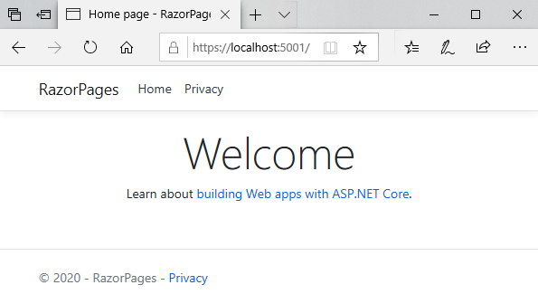
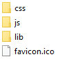

初试 Razor Pages
初试 Razor Pages
在本节中，将向您展示如何使用.NET Core命令行工具来创建简单的 Razor Pages 应用程序，以及如何在浏览器中构建和运行它。 您还将探索应用程序的各个部分，并了解每个部分所扮演的角色。
尝试： 创建您的第一个 Razor Pages 应用程序
-
再次之前，如果您还没有任何准备，您可以先下载最新版本的 .NET Core SDK。
-
打开首选的命令行工具（在 Windows 中为 cmd.exe 或 Powershell ；在 Mac 上为 Terminal ；在 Linux 上为 Bash 或类似工具），然后输入
dotnet --version。 -
检查输出以确认您的.NET Core版本至少为2.0。
-
如果需要，请导航至适合您的应用程序的位置，然后输入
mkdir RazorPages以创建应用程序文件的文件夹。 -
输入
cd RazorPages进入应用程序文件夹。 -
输入
dotnet new razor。此命令从基本站点模板生成应用程序文件。 您应收到确认已创建该站点并且正在运行dotnet restore命令的确认。dotnet restore命令查看应用程序所需的依赖关系，并从NuGet获取它们。 -
输入
dotnet run编译应用程序并在端口5000上启动它： -
打开您常用的浏览器并导航到
http://localhost:5000。 该网站会显示：
Visual Studio
如果您使用的是Visual Studio，请从开始屏幕中选择“创建新项目”
从项目选项中选择“ ASP.NET Core Web应用程序”：
修改项目名称选项和创建项目文件的位置，以满足您的需要。
下一步, 从出现的模板选项中选择Web 应用程序 ：
这将会创建一个新的 Razor Pages 应用程序，该应用程序会与通过命令行生成的应用程序相同。
Razor Pages 应用程序内容解析
Razor Pages 应用程序包含许多文件夹和文件。 在下一节中，您将在上一节中探索在创建，还原，编译和运行应用程序时生成的文件。这是应用程序文件夹结构的浏览器视图，然后仔细查看每个文件夹或文件组：
Pages 文件夹
Pages 文件夹是 Razor Pages 项目文件的默认位置。以 .cshtml 结尾的文件是Razor文件。 以 .cs 结尾的其他文件是 C＃ 类文件。 这些与 Razor 文件配对，称为 PageModell 文件。 并非所有的Razor文件都具有匹配的类文件。 某些 Razor 文件的文件名中带有下划线（_）【这里习惯用在前缀加“下划线” 译者注】。 这些文件不可浏览，但作为Razor Pages应用程序的一部分，它们将扮演不同的角色。 您可以阅读有关这些特殊Razor文件及其角色的更多信息。
wwwroot 文件夹

wwwroot 文件夹是在 .NET Core Web 应用程序中放置静态文件的位置。 这些文件包括站点使用的 CSS 样式表，图像和 JavaScript 文件。 lib 的其他文件夹包含第三方客户端软件包【脚本文件包 译者注】。 这些软件包可以由 LibMan（Razor Pages 和 MVC 应用程序的默认客户端软件包管理器）管理。
lib 文件夹
图例中包含的第三方客户端软件包是：
- BootStrap：一个由Twitter团队构建的UI框架，它减少了设计网站布局所需的工作，并且还为按钮，表单，表格，输入等组件提供了一系列内置样式。 在Razor Pages 3.x中，Bootstrap的版本为4。
- jQuery：BootStrap 依赖的 JavaScript 库。
- jQuery 验证：用于表单客户端验证的jQuery插件
- jQuery Unobtrusive Validation：另一个由 ASP.NET 团队设计的 jQuery 验证插件，专门用于处理 Razor 帮助程序生成的表单输入。
Root 文件

多种文件位于 Root 文件夹中。
| 文件夹 | 备注 |
|---|---|
| appsettings.json | 项目的配置文件，格式为 json，详见配置设定 【作用等同于之前aspx中的web.config，但并不是 web.config 。web.config 文件会由项目编译后自动生成，与此文件无关 译者注】 |
| appsettings.Development.json | 用于应用程序范围的配置设置，仅在开发期间生效 |
| Program.cs | 应用程序的入口点 |
| RazorPages.csproj | 包含有关项目的信息，MSBuild系统将其用于编译和发布 |
| Startup.cs | Startup 类 配置处理所有对应用程序的请求的请求管道 |
Bin 文件夹
bin 文件夹是编译应用程序时生成的二进制文件的默认输出位置。 通常，此文件夹包含两个子文件夹，即 Debug和Release。 第一个用于在调试模式下编译应用程序所产生的二进制文件，第二个用于放置在发布模式下通过编译生成的二进制文件。 这两个文件夹都包含一个名为 netcoreapp[version number] 的子文件夹，其中 [version number] 代表用于创建应用程序的.NET Core版本。 例如，如果使用的是 .NET Core 3.1，则文件夹名称将为 netcoreapp3.1 。 您在上图中看到的文件来自 /bin/Debug/netcoreapp3.1/
Obj 文件夹
Obj 文件夹用于存储临时对象文件和其他用于在编译过程中创建最终二进制文件的文件。